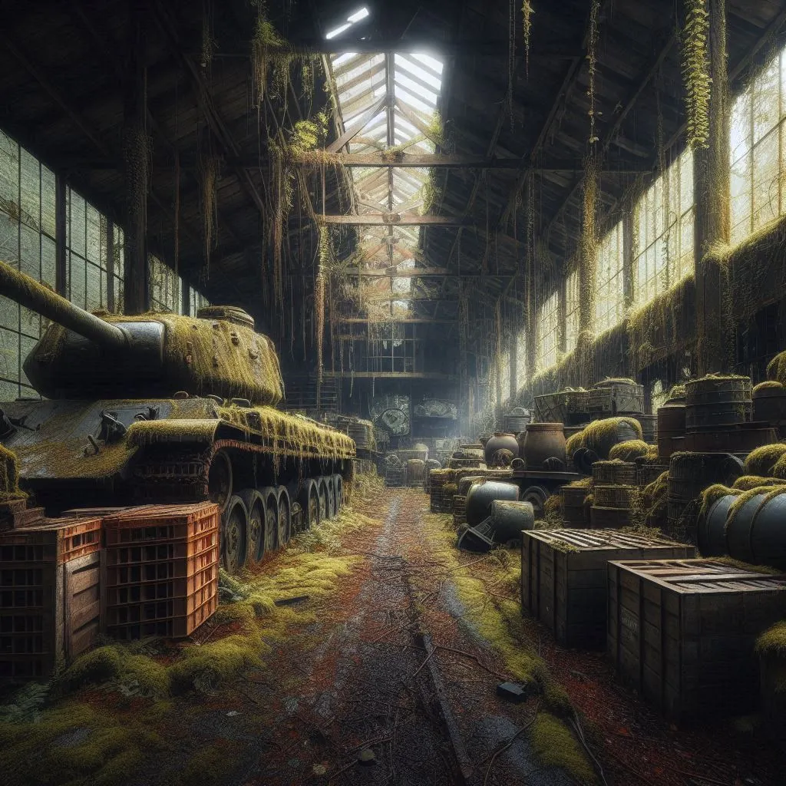
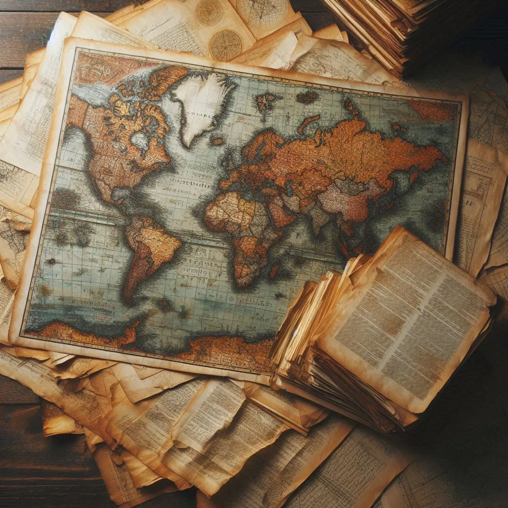

Jasper McCannon

Geboren: 3. Mai. 1831, New Orleans, Lousiana
Verschieden: 9. Januar. 1910, San Francisco, Kalifornien
Beruf: Grunder von Kugelhagel & Co.
Frühe Jahre
Jasper McCannon wurde 1831 in New Orleans geboren, einer Stadt bekannt für ihrengeschäftigen Hafen und Abendteuergeist. Schon in jungen Jahren zeigt er eine außergewöhnliche Fähigkeit, sich in unverhersehbaren Situationen durchzusetzen und Gelegenheiten zu nutzen, wo andere nur Hindernisse sahen. Sein Spitzname "Der Schlaue" wurde ihm wegen der unnachahmlichen Fähigkeit verliehen, stehts zur richtigen Zeit am richtigen Ort zu sein - oft gerade noch bevor jemand etwas vermisste.
Karma des Zufalls
Während des Amerikanischen Bürgerkriegs stieß Jasper zufällig auf sein Lebenswerk. 1861, als der Krieg tobt und Chaos herrscht, entdeckt er eine Reihe verlassener Waffenlager, die niemand mehr beansprucht hatte. Mit einem brillianten Schachzug entschloss er sich, diese "vergessenen" Waffen zu sammeln und an "glückliche" neue Besitzer weiterzugeben. So wurde Kugelhagel & Co. gegründent - ein Name, der sich vielen "zufälligen" Funden und die erstaunlichen hinter jedem hinter jedem Stück verkörpert.
Die goldenen Jahre
In den folgenden Jahrzehnten reiste Jasper durch die USA und weit darüber hinaus, um weitere "verlorene" Schätze zuentdecken. Seine Reisen führten in von staubigen Kellern in verlassenen Militärdepots bis zu den geheimen Ecken von Sammlerresidenzen. Dabei erlangte er nicht nur Reichtum, sondern auch ein gewisses Maß an Ruhm und Legende. Unter Seiner Führung wurde Kugelhagel & Co. zu einer berühmten Addresse für Sammler und Abenteurer.
Letzte Joahre und Erbe
Nach einem erfüllten Leben, voller unvorhersehbarer Entdeckungen und geschickten Verhandlungen, zog sich Mr. McCannon 1901 nach San Francisco zurück. Hier widmite er seine letzen Jahre dem Schreiben seiner Memoiren und dem Ausbau seiner privaten Sammlung. Er starb 1910, im Alter von 79 Jahren, und hinterließ eine Firma, die nach wie vor auf Zufall und "kreative Entdeckungen" setzt.
zu seinen MemoirenImpressum